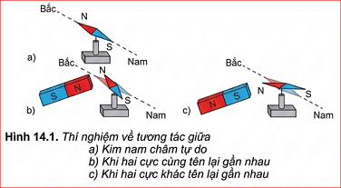
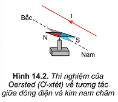
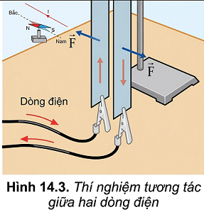
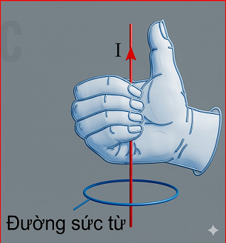
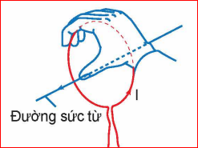
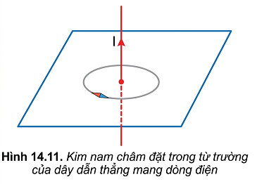

Ta đã biết nam châm và dòng điện đều tác dụng lực lên kim nam châm. Vậy xung quanh dòng điện có tồn tại từ trường không? Tính chất cơ bản của từ trường là gì? Từ trường được biểu diễn như thế nào?
Tương tác giữa nam châm với nam châm, giữa dòng điện với nam châm và giữa dòng điện với dòng điện gọi là tương tác từ. Lực tương tác trong các trường hợp đó gọi là lực từ.
1. Thí nghiệm về tương tác giữa nam châm với kim nam châm: Khi đưa hai cực cùng tên hay khác tên của một nam châm thẳng và kim nam châm lại gần nhau thì chúng đẩy nhau hay hút nhau?

2. Thí nghiệm Oersted: Khi cho dòng điện chạy qua dây dẫn ta thấy kim nam châm lệch một góc. Dự đoán điều gì xảy ra nếu ta đổi chiều dòng điện? Kim nam châm có tác dụng lực lên dòng điện không?

3. Thí nghiệm tương tác giữa hai dòng điện: Dự đoán hiện tượng nếu dòng điện qua hai tấm kim loại cùng chiều.

Từ trường là trường lực gây ra bởi dòng điện hoặc nam châm, là một dạng vật chất tồn tại xung quanh dòng điện hoặc nam châm mà biểu hiện cụ thể là sự xuất hiện của lực từ tác dụng lên một dòng điện hay một nam châm khác đặt trong nó.
Tính chất cơ bản của từ trường là gây ra lực từ tác dụng lên một nam châm, một dòng điện hay một hạt mang điện chuyển động đặt trong nó.
Để đặc trưng cho từ trường về mặt tác dụng lực, người ta dùng một đại lượng vectơ gọi là vectơ cảm ứng từ, kí hiệu là \( \vec{B} \).
Từ trường không tồn tại xung quanh các điện tích đứng yên. Chỉ có điện tích chuyển động mới tạo ra từ trường.
Đường sức từ là những đường vẽ ở trong không gian có từ trường sao cho tiếp tuyến với nó tại mỗi điểm trùng với hướng của từ trường tại điểm đó.
a. Đối với dòng điện thẳng:
Ngón cái chỉ chiều dòng điện, các ngón tay khum chỉ chiều đường sức từ.

b. Đối với dòng điện tròn/ống dây:
Các ngón tay khum theo chiều dòng điện, ngón cái choãi ra chỉ chiều đường sức từ.


Xác định chiều của dòng điện chạy qua dây dẫn ở Hình 14.11.
Trái Đất là một nam châm khổng lồ. Cực Bắc địa lý gần cực Nam từ trường, và ngược lại. Nhờ đó ta có thể dùng la bàn để định hướng.
Sử dụng quy tắc nắm bàn tay phải để xác định chiều của đường sức từ xung quanh một dây dẫn hoặc xác định cực của một ống dây khi biết chiều dòng điện.
Bài 1: Xác định cảm ứng từ \( B \) tại tâm vòng dây tròn bán kính \( R = 10 \text{ cm} \) mang dòng điện \( I = 5 \text{ A} \). (Biết \( B = 2\pi \cdot 10^{-7} \frac{I}{R} \))
Bài 2: Kim nam châm tại một điểm trong từ trường chỉ hướng nào?
Bài 3: Ống dây có dòng điện đi qua, nếu ta tăng số vòng dây trên mỗi mét chiều dài lên 3 lần thì từ trường bên trong ống dây thay đổi thế nào?